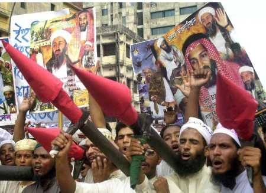
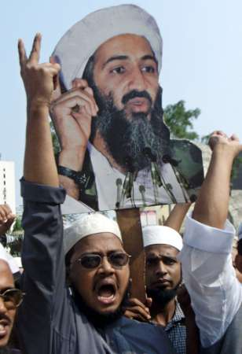
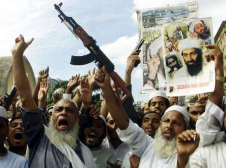
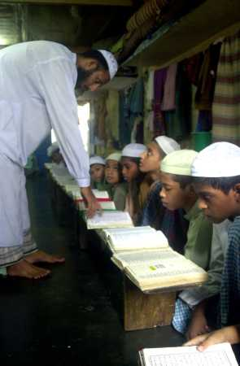

|
|
Religious Extremism and Nationalism in
Bangladesh
Part One
By Bertil Lintner
Introduction
When East Pakistan broke away from the main Western part of the country to
form Bangladesh in 1971, it was in opposition to the notion that all Muslim
areas of former British India should unite in one state. The Awami League,
which led the struggle for independence, grew out of the Bangla language
movement, and was based on Bengali nationalism, not religion. At the same
time, independent, secular Bangladesh became the only country in the
subcontinent with one dominant language group and very few ethnic and
religious minorities.
It is important to remember that a Muslim element has always been present;
otherwise what was East Pakistan could have merged with the predominantly
Hindu Indian state of West Bengal, where the same language is spoken. The
importance of Islam grew as the Awami League fell out with the country's
powerful military, which began to use religion as a counterweight to the
League's secular, vaguely socialist policies (many hardline socialists,
however, were opposed to the idea of a separate Bengali state in Bangladesh,
which they branded as "bourgeois nationalism.") The late Bangladeshi
scholar Muhammad Ghulam Kabir argued that Maj.-Gen. Zia ur- Rahman, who seized
power in the mid-1970s, "successfully changed the image of Bangladesh
from a liberal Muslim country to an Islamic country." (1) M.G. Kabir also
points out that "secularism" is a hazy and often misunderstood
concept in Bangladesh. The Bengali term for it is dharma mirapekshata, which
literally translates to "religious neutrality." Thus the word
"secularism" in a Bangladeshi context has a subtle difference in
meaning from its use in the West. (2)

In 1977, Zia dropped secularism as one of the four cornerstones of
Bangladesh's constitution (the other three were democracy, nationalism, and
socialism, although no socialist economic system was ever introduced) and made
the recitation of verses from the Qur'an a regular practice as meetings with
his newly formed political organization, the Bangladesh Nationalist Party (BNP),
which became the second biggest party in the country after the Awami League.
The marriage of convenience between the military - which needed popular appeal
and an ideological platform to justify its opposition to the Awami League -
and the country's Islamic forces survived Zia's assassination in 1981.
In some respects, it grew even stronger under the rule of Lt.-Gen. Hossain
Muhammad Ershad (1982-90). In 1988, Ershad made Islam the state religion of
Bangladesh, thus institutionalizing the new brand of nationalism with an
Islamic flavor introduced by Zia. Ershad also changed the weekly holiday from
Sunday to Friday, and revived the Jamaat-e-Islami to counter secular
opposition. The Jamaat had supported Pakistan against the Bengali nationalists
during the liberation war, and most of its leaders had fled to (West) Pakistan
after 1971. Under Zia, they came back and brought with them new,
fundamentalist ideas. Under Ershad, Islam became a political factor to be
reckoned with.

Ershad was deposed in December 1990 following
anti-government protests, and was later convicted of a number of offences and
jailed. But this did not lead to a return to old secular practices. Zia's
widow and the new leader of the BNP, Khaleda Zia, became prime minister after
a general election in February 1991. This was a time when the Islamic forces
consolidated their influence in Bangladesh, but it came to a halt when the
Awami League, led by Sheikh Hasina Wajed, the daughter of Bangladesh's
founding father, Sheikh Mujib ur-Rahman, won the 1996 election. Five years
later, an electoral 4-party alliance led by Khaleda Zia's BNP came to power -
and the new coalition that took over included for the first time two ministers
from the Jamaat, which had emerged as the third largest party, capturing 17
seats in the 300- strong parliament.
The BNP rode on a wave of dissatisfaction with the Awami League, which many
perceived as corrupt, but the the 4-party alliance was able to win a massive
majority - 191 seats for the BNP and 23 seats for its three allies - only
because of the British-style system with one winner per constituency, and the
alliance members all voted for each other. The Awami League remains the single
biggest political party in Bangladesh with 40% of the popular vote, but it
secured only 62 seats (or 20.66% of the MPs) in the election (it now has 58
seats because four were relinquished due to election of MPs from more than one
seat). (3)

Expectations were high on the new government, which many
hoped would be "cleaner" than the previous one. In June 2001, the
Berlin-based organization Transparency International had in its annual
report ranked Bangladesh the world's most corrupt country. (4) But since the
new government took over in October 2001, very little has changed in that
regard. Further, violence has become widespread and much of it appears to be
religiously and politically motivated. The Society for Environment and Human
Development (SEHD), a well-respected Bangladeshi NGO, quotes a local report
that says that non-Muslim minorities have suffered as a result: "The
intimidation of the minorities which had begun before the election, became
worse afterwards." (5) Amnesty International reported in December 2001
that Hindus - who now make up less than 10% of Bangladesh's population of 130
million - in particular have come under attack. Hindu places of worship have
been ransacked, villages destroyed and scores of Hindu women are reported to
have been raped. (6)
While the Jamaat may not be directly behind these attacks, its inclusion in
the government has meant that more radical groups feel they now enjoy
protection from the authorities and can act with impunity. The most militant
group, the Harkat-ul- Jihad-al-Islami (HUJI, or the Movement of Islamic Holy
War), is reported to have 15,000 members. Bangladeshi Hindus and moderate
Muslims hold them responsible for many of the recent attacks against religious
minorities, secular intellectuals and journalists. In a statement released by
the US State Department on May 21, 2002, HUJI is described as a terrorist
organization with ties to Islamic militants in Pakistan. (7) While Bangladesh
is yet far from becoming another Pakistan, Islamic forces are no doubt on the
rise, and extremist influence is growing, especially in the countryside.
According to a foreign diplomat in Dhaka: "In the 1960s and 1970s, it was
the leftists who were seen as incorruptible purists. Today, the role model for
many young men in rural areas is the dedicated Islamic cleric with his skull
cap, flowing robes and beard." (8)
1. THE RETURN OF THE JAMAAT-E-ISLAMI
The idea that the Muslim-dominated parts of British India should become a
separate country was articulated for the first time in a short essay written
in 1933 by an Indian Muslim student at Cambridge, Rahmat Ali. He even proposed
a name for the new state - Pakistan - which was an acronym based on the
nations that would compose it: the Punjab, Afghan (the Northwest Frontier),
Kashmir, Indus (or Sindh) and BaluchiSTAN. The new name also meant "the
Land of the Pure."
However, the acronym did not include India's most populous Muslim province,
East Bengal, and, at first, most Islamic groups opposed the idea of religious
nationalism. The most prestigious Islamic university in the subcontinent, the
Darul Uloom, was located at Deoband in Saharanpur district of what now is
Uttar Pradesh in India, and its leaders strongly supported the Indian
nationalist movement led by the Congress. The Jamaat-e-Islami, which was
founded in 1941 by Maulana Abul Ala Mauddudi and had grown out of the Deoband
Madrassa (as the university became known) went to the extent of "alleging
that the demand for a separate state based on modern selfish nationalism
amounted to rebelling against the tenets of Islam." (9)
But gradually, the Muslim League, led by Muhammad Ali Jinnah, won support for
the Pakistan idea, and when India became independent in August 1947, two
states were born: the secular but Hindu-dominated Union of India - and the
Islamic state of Pakistan, which consisted of two parts, one to the west of
India and the other to the east. The Jamaat became one of the strongest
supporters of the Pakistan idea, and, somewhat ironically, the Deobandi
movement through its network of religious schools, or madrassas, developed
into a breeding ground for Pakistan-centered Islamic fundamentalism. Over the
years, the Deobandi brand of Islam has become almost synonymous with religious
extremism and fanaticism.
The Deobandis had actually arisen in British India not as a reactionary force
but as a forward-looking movement to unite and reform Muslim society in the
wake of oppression the community faced after the 1857 revolt, or
"Mutiny" as the British called it. (10) But in independent Pakistan
- East and West - new Deobandi madrassas were set up everywhere, and they were
run by semi-educated mullahs who, according to Pakistani journalist Ahmed
Rashid, "were far removed from the original reformist agenda of the
Deobandi school." (11) Much later, it was from these madrassas
Afghanistan's dreaded Talibans ("Islamic Students") were to emerge.

The Jamaat was from the beginning inspired by the Ikhwan
ul-Muslimeen, or the Muslim Brotherhood, which was set up in Egypt in 1928
with the aim of bringing about an Islamic revolution and creating an Islamic
state. (12) When they had come to accept Pakistan as that Islamic state,
Bengali nationalism was totally unacceptable. The Jamaat's militants fought
alongside the Pakistan army against the Bengali nationalists. Among the most
notorious of the Jamaat leaders was Abdul Kader Molla, who became known as
"the Butcher of Mirpur," a Dhaka suburb which in 1971 was populated
mainly by non-Bengali Muslim immigrants. (13) Today, he is the publicity
secretary of Bangladeshi Jamaat, and, despite his background, was granted a US
visa to visit New York in the last week of June, 2002. In 1971, he and other
Jamaat leaders were considered war criminals by the first government of
independent Bangladesh, but they were never prosecuted as they had fled to
Pakistan.
The leaders of the Jamaat returned to Bangladesh during the rule of Zia and
Ershad because they were invited to come back, and they also saw Ershad
especially as a champion of their cause. This was somewhat ironic as Ershad
was - and still is - known as a playboy and hardly a religiously-minded
person. But he had introduced a string of Islamic reforms - and he needed the
Jamaat to counter the Awami League, and, like his predecessor Zia, he had to
find ideological underpinnings for what was basically a military dictatorship.
The problem was that the Jamaat had been discredited by its role in the
liberation war - but, as a new generation emerged, that could be
"corrected." Jamaat's Islamic ideals were taught in Bangladesh's
madrassas, which multiplied at a tremendous pace.
The madrassas fill an important function in an impoverished country such as
Bangladesh, where basic education is available only to a few. Today, there are
an estimated 64,000 madrassas in Bangladesh, divided into two kinds. The Aliya
madrassas are run with government support and control, while the Dars-e-Nizami
or Deoband-style madrassas are totally independent. Aliya students study for
15-16 years and are taught Arabic, religious theory and other Islamic subjects
as well as English, mathematics, science and history. They prepare themselves
for employment in government service, or for jobs in the private sector like
any other college or university student. In 1999, there were 7,122 such
registered madrassas in Bangladesh. (14)
The much more numerous Deobandi madrassas are more "traditional";
Islamic studies dominate, and the students are taught Urdu (the national
language of Pakistan), Persian and Arabic. After finishing their education,
the students are incapable of taking up any mainstream profession, and the
mosques and the madrassas are their main sources of employment. As Bangladeshi
journalist Salahuddin Babar points out: "Passing out from the madrassas,
poorly equipped to enter mainstream life and professions, the students are
easily lured by motivated quarters who capitalize on religious sentiment to
crate fanatics, rather than modern Muslims." (15)
The consequences of this kind of madrassa education can be seen in the growth
of the Jamaat. It did not fare well in the 1996 election, capturing only three
seats in the parliament and 8.61% of the votes.16 Its election manifesto was
also quite carefully worded, perhaps taking into consideration the party's
reputation and the fact that the vast majority of Bangladeshis remain opposed
to Sharia law and other extreme Islamic practices. The 23-page document
devoted 18 pages to lofty election promises, and only five to explaining
Jamaat's political stand. The party tried to reassure the public that it would
not advocate chopping off thieves' hands, stoning of people committing
adultery, or banning interest - at least not immediately. According to the NGO
SEHD: "The priority focus would be alleviation of poverty, stopping free
mixing of sexes and thus awakening the people to the spirit of Islam and then
eventually step by step
the Islamic laws would be introduced." (17)
[End of part One] Read Part -2
Citations:
1 Muhammad Ghulam Kabir, Changing Face of Nationalism: The Case of
Bangladesh, New Delhi: South Asian Publishers, 1994, p. 201.
2 Ibid., p. 189.
3 The Eighth Parliamentary Elections 2001, Dhaka: Society for Environment and
Human Development for Coordinating Council for Human Rights in Bangladesh,
March 2002, p. 2.
4 http://www.transparency.org/cpi/2001/cpi2001.html
5 The Eighth Parliamentary Elections 2001, Dhaka: Society for Environment and
Human Development for Coordinating Council for Human Rights in Bangladesh,
March 2002, p. 161.
6 Bangladesh: Attacks on members of the Hindu majority, Amnesty International,
December 2001.
7 Patterns of Global Terrorism 2001, the Office of the Coordinator for Counter
terrorism, May 21,2002.
8 Bertil Lintner, "Is religious extremism on the rise in
Bangladesh?," Jane's Intelligence Review, May 2002.
9 M.G. Kabir, op. cit., p. 99.
10 For an excellent account of the rise of the Deobandis, see Salahuddin Babar,
"Rise of the Right", Probe Newsmagazine (Bangladesh), March 1-15,
2002.
11 Ahmed Rashid, Taliban: The Story of the Afghan Warlords, London: Pan Books,
2001, p. 89.
12 Ibid., p. 86.
13 Ahmed Salim, "Murders Most Foul," Newsline (Pakistan), November
29, 2000.
14 Probe, March 1-15, 2002.15 Ibid.
16 The Reporter's Guide: Handbook on Election Reporting, Dhaka: Society for
Environment and Human Development, 2001, p. 101.
17 Ibid., p. 101.
---------------------
Mr. Lintner writes for Far Eastern Economic Review, a Hong Kong based
publication of The Wall Street Journal. This paper was presented in an
international workshop on Religion and Security in South Asia at the Asia
Pacific Center for Security Studies in Honolulu, Hawaii. August 19-22, 2002.
Move to part-2
|
|
|